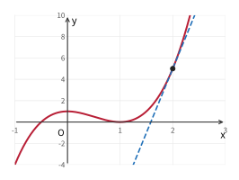
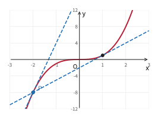
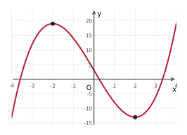
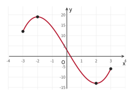
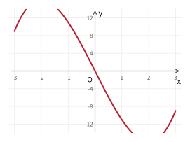
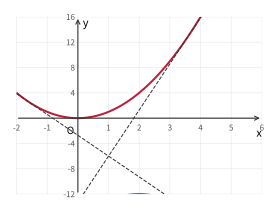
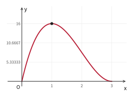
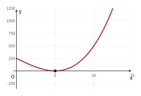

ホーム ＞ 数学II ＞ 微分法（接線・増減・極値）
別冊章末問題の解答
1. 曲線 \(y=2 x^{3} - 3 x^{2} + 1\) 上の点 \((2,\ 5)\) における接線の方程式を求めよ。
導関数を求める
\[f'(x)=6 x^{2} - 6 x\]接線の傾き（\(x=2\) での微分係数）
\[f'(2)=12\]接点の座標
\[f(2)=5\]接点は \((2,\ 5)\)。
接線の方程式
\(y-f(a)=f'(a)(x-a)\) に代入する。
\[y - 5=12\left(x - 2\right)\ \Rightarrow\ y=12 x - 19\]
（例題1の型）
【答案】
\[y=12 x - 19\]答
2. 点 \(P(-2,\ -8)\) から曲線 \(y=x^{3}\) にひいた接線の方程式をすべて求めよ。
接点を \((t,\ f(t))\) とおく
\(f'(x)=3 x^{2}\) より、接点 \(\left(t,\ f(t)\right)\) での接線は
\[y-t^{3}=3 t^{2}\left(x-t\right)\]\[y=- 2 t^{3} + 3 t^{2} x\]点 \(P\) を通る条件
\(x=-2,\ y=-8\) を代入する（\(P\) は曲線上の点でもあるが、\(P\) を通る接線は接点が \(P\) とは限らない）。
\[-8=- 2 t^{3} - 6 t^{2}\]\[- 2 t^{3} - 6 t^{2} + 8=0\]\(t\) を求める
\[- 2 \left(t - 1\right) \left(t + 2\right)^{2}=0\ \Rightarrow\ t=-2,\ 1\]接線の方程式
\(t=-2\) のとき \(y=12 x + 16\)
\(t=1\) のとき \(y=3 x - 2\)

（例題2の型）
【答案】
\[y=12 x + 16,\ y=3 x - 2\]答
3. 関数 \(f(x)=x^{3} - 12 x + 3\) の増減を調べ、極値を求めよ。また、グラフの概形をかけ。
導関数を求める
\[f'(x)=3 x^{2} - 12=3 \left(x - 2\right) \left(x + 2\right)\]\(f'(x)=0\) を解く
\[f'(x)=0\ \Rightarrow\ x=-2,\ 2\]増減表をかく
\(f'(x)\) の符号は、各区間の値を代入して調べる。
| \(x\) | \(-2\) | \(2\) | |||
|---|---|---|---|---|---|
| \(f'(x)\) | \(+\) | \(0\) | \(-\) | \(0\) | \(+\) |
| \(f(x)\) | \(\nearrow\) | \(19\) 極大 | \(\searrow\) | \(-13\) 極小 | \(\nearrow\) |
極値を答える
極大値 \(19\)（\(x=-2\)）、極小値 \(-13\)（\(x=2\)）。グラフは次のようになる。

（例題3の型）
【答案】
\[\text{極大値 }19\ (x=-2),\quad \text{極小値 }-13\ (x=2)\]答
4. 3次関数 \(f(x)=x^3+ax^2+bx+c\) が \(x=-1\) で極大値 \(12\)、\(x=5\) で極小値をとる。定数 \(a,\ b,\ c\) の値と、極小値を求めよ。
極値の条件を式にする
\(f'(x)=3x^2+2ax+b\)。\(x=-1\)、\(x=5\) で極値をとるから \(f'(-1)=0\)、\(f'(5)=0\)。
\[\begin{cases}- 2 a + b + 3=0\\ 10 a + b + 75=0\end{cases}\]\(a,\ b\) を求める
\[a=-6,\quad b=-15\]\(c\) を求める
\(x=-1\) で極大値 \(12\) だから \(f(-1)=12\)。
\[c + 8=12\ \Rightarrow\ c=4\]逆に確かめる（増減表）
\(f(x)=x^{3} - 6 x^{2} - 15 x + 4\)、\(f'(x)=3 \left(x - 5\right) \left(x + 1\right)\)。
| \(x\) | \(-1\) | \(5\) | |||
|---|---|---|---|---|---|
| \(f'(x)\) | \(+\) | \(0\) | \(-\) | \(0\) | \(+\) |
| \(f(x)\) | \(\nearrow\) | \(12\) 極大 | \(\searrow\) | \(-96\) 極小 | \(\nearrow\) |
\(x=-1\) で極大、\(x=5\) で極小になり、条件に合う。極小値は \(-96\)。
（例題4の型）
【答案】
\[a=-6,\ b=-15,\ c=4,\ \text{極小値 }-96\]答
5. 関数 \(f(x)=x^{3} - 12 x + 3\ (-3\leqq x\leqq 3)\) の最大値と最小値、およびそのときの \(x\) の値を求めよ。
導関数と極値の候補
\[f'(x)=3 x^{2} - 12=3 \left(x - 2\right) \left(x + 2\right)\]\(f'(x)=0\ \Rightarrow\ x=-2,\ 2\)。このうち \(-3\leqq x\leqq 3\) に入るのは \(x=-2,\ 2\)。
増減表をかく（両端も入れる）
| \(x\) | \(-3\) | \(-2\) | \(2\) | \(3\) | |||
|---|---|---|---|---|---|---|---|
| \(f'(x)\) | \(+\) | \(0\) | \(-\) | \(0\) | \(+\) | ||
| \(f(x)\) | \(12\) | \(\nearrow\) | \(19\) 極大 | \(\searrow\) | \(-13\) 極小 | \(\nearrow\) | \(-6\) |
最大値・最小値
極値の候補と両端の値を比べる。
\[f(-3)=12,\ f(-2)=19,\ f(2)=-13,\ f(3)=-6\]最大値 \(19\)（\(x=-2\)）、最小値 \(-13\)（\(x=2\)）。

（例題5の型）
【答案】
\[\text{最大値 }19\ (x=-2),\quad \text{最小値 }-13\ (x=2)\]答
6. 方程式 \(x^3-12x=16\) の異なる実数解の個数を求めよ。
定数を分離
\(x^3-12x=k\) の実数解は、\(y=x^3-12x\) と \(y=k\) の共有点の個数。
増減
\[y'=3x^2-12=0\ \Rightarrow\ x=\pm2\]
極大値 \(16\)、極小値 \(-16\)。

個数
\(k=16\) のとき \(2\) 個。
（例題6の型）
【答案】
\[2\]答
7. 関数 \(f(x)=x^3+kx^2+9x+1\) が極値をもつような定数 \(k\) の値の範囲を求めよ。
導関数
\[f'(x)=3x^2+2kx+9\]
極値をもつ \(\iff f'(x)=0\) が異なる2つの実数解をもつ（符号が変わる）。
判別式
\[\dfrac D4=k^2-3\cdot9=k^2-27>0\]
答え
\[k<- 3 \sqrt{3},\ \ k>3 \sqrt{3}\]（例題7の型）
【答案】
\[k<- 3 \sqrt{3},\ k>3 \sqrt{3}\]答
8. 2つの放物線 \(y=x^2\) と \(y=-x^2+4x-16\) の共通接線の方程式をすべて求めよ。
接線を一般に
\(y=x^2\) の点 \((t,t^2)\) での接線 \(y=2tx-t^2\)。

もう一方にも接する
\(y=-x^2+4x-16\) の点 \(u\) での接線 \(y=(-2u+4)x+u^2-16\)。係数を比べて
\[2t=-2u+4,\qquad -t^2=u^2-16\]解く
\[\text{接線：}\quad y=- 2 \sqrt{7} x + 2 x - 8 + 2 \sqrt{7},\quad y=2 x + 2 \sqrt{7} x - 8 - 2 \sqrt{7}\]
（例題8の型）
【答案】
\[y=- 2 \sqrt{7} x + 2 x - 8 + 2 \sqrt{7},\ y=2 x + 2 \sqrt{7} x - 8 - 2 \sqrt{7}\]答
9. 1辺 \(6\) cm の正方形の厚紙の四隅から、1辺 \(x\) cm の正方形を切り取って折り曲げ、ふたのない箱を作る。体積が最大となる \(x\) と、そのときの体積を求めよ。
体積の式
\(0<x<3\)。
\[V=x(6-2x)^2=4 x^{3} - 24 x^{2} + 36 x\]増減
\[V'=12 x^{2} - 48 x + 36=12 \left(x - 3\right) \left(x - 1\right)\]
\(V'=0\) より \(x=1,\ 3\)。範囲内は \(x=1\)。

最大値
\[V(1)=16\]（例題9の型）
【答案】
\[x=1,\ V=16\]答
10. \(x\geqq0\) のとき、不等式 \(x^3+250\geqq75x\) を証明せよ。
差を関数に
\(f(x)=x^{3} - 75 x + 250\) とおき、\(x\geqq0\) で \(f(x)\geqq0\) を示す。
増減
\[f'(x)=3 x^{2} - 75=3 \left(x - 5\right) \left(x + 5\right)\]
\(x\geqq0\) で \(x=5\) が極小。

最小値
\[f(5)=0\ \Rightarrow\ f(x)\geqq0\]
等号は \(x=5\)。
（例題10の型）
【答案】
\[\text{証明終}\]答